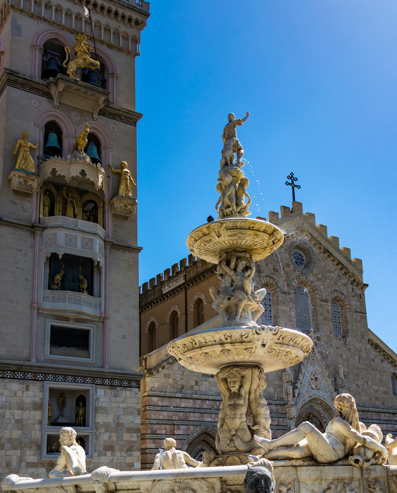

Messina
Situata nel cuore del centro storico, a pochi passi dal porto Falcata, Piazza Duomo è il centro gravitazionale di Messina. È un luogo dove la storia millenaria dell'isola si fonde con una delle attrazioni ingegneristiche più spettacolari di Europa. Qui, lo sguardo viene inevitabilmente catturato dal contrasto tra la solida mole del Duomo e la slanciata verticalità del suo Campanile, che ospita l'orologio astronomico meccanico più grande e complesso al mondo, realizzato dalla ditta Ungerer di Strasburgo nel 1933. Ogni giorno, alle 12:00 in punto, un complesso sistema di contrappesi e ingranaggi dà vita alle statue dorate. Il leone ruggisce, il gallo canta e i personaggi biblici sfilano in una danza meccanica che incanta migliaia di visitatori. Tra le figure tematicamente spiccano le due eroine messinesi, Dina e Clarenza, che suonano le campane in ricordo della resistenza contro gli Angioini durante i Vespri Siciliani.

La Basilica Cattedrale di Santa Maria Assunta è un esempio magistrale di ricostruzione filologica. Nonostante i danni subiti nel corso dei secoli, conserva l'imponente struttura normanna. Al centro della piazza sorge quella che lo storico dell'arte Bernard Berenson definì "la più bella fontana del Cinquecento europeo": la Fontana di Orione. Il mito fondativo: Realizzata da Giovanni Angelo Montorsoli (allievo di Michelangelo), la fontana celebra Orione, il mitico gigante fondatore di Messina. La struttura piramidale è ricca di sculture che raffigurano i quattro fiumi Tevere, Nilo, Ebro e il locale Camaro, creature marine e stemmi, rendendola un capolavoro di scultura rinascimentale.
Non limitatevi a guardare il campanile dall'esterno. È possibile salire all'interno della torre campanaria per osservare dal vicino il sofisticato meccanismo di leve e ingranaggi dell'orologio e godere di una delle viste più suggestive sullo Stretto di Messina.